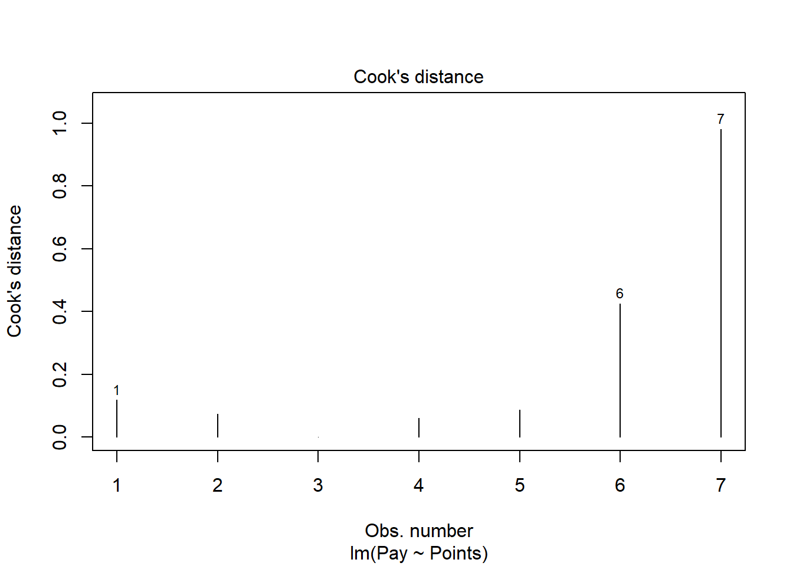
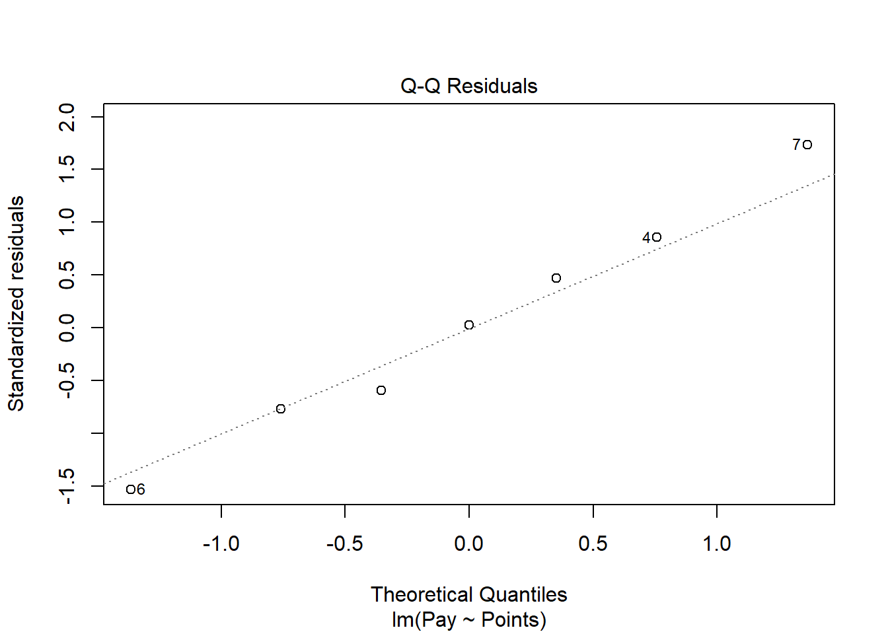
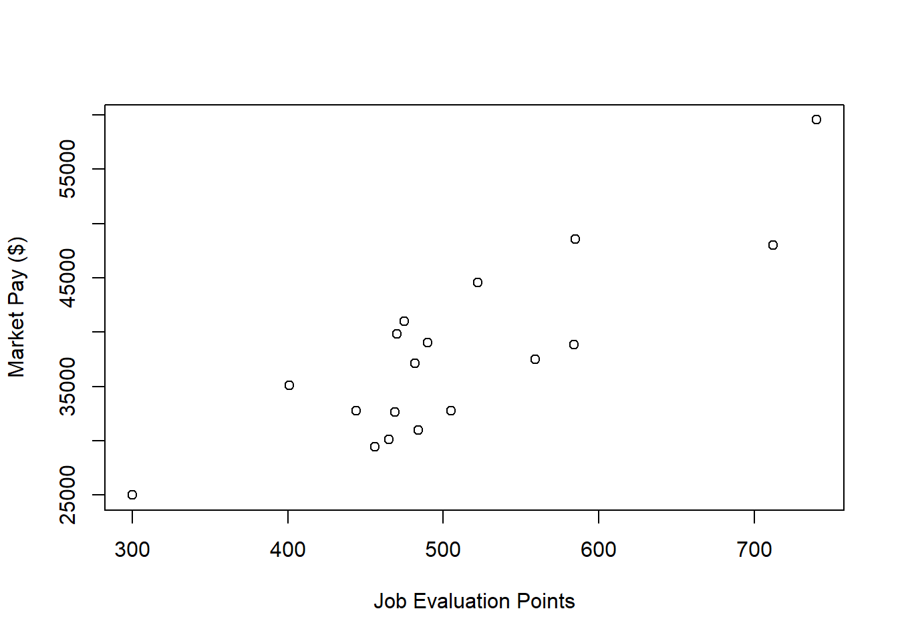

Chapter 58 Estimating a Market Pay Line Using Linear & Polynomial Regression
In this chapter, we will learn how to estimate a market pay line using simple linear regression and polynomial regression.
58.1 Conceptual Overview
Estimating a market pay line allows us to determine the extent to which our internal job structure is aligned with external market pay practices for benchmark jobs. Further, a market pay line can help us estimate an appropriate pay level for a nonbenchmark job. Finally, a market pay line can be used as the basis for a pay policy line and, ultimately, creating pay bands/grades.
To estimate a market pay line, we must regress market pay data on job evaluation points or numeric pay grade levels. If we assume that the association is linear, then we can apply simple linear regression. If, however, we assume that the association is nonlinear, then we can apply polynomial regression or perform a logarithmic transformation of the pay variable. In this chapter, we will practice both simple linear regression and polynomial regression to estimate linear and nonlinear associations, respectively. For a review of these forms of regression and additional background information, please refer to the chapters covering simple linear regression and polynomial regression.
Please note that in this chapter our predictor variable will be job evaluation points, as the point-factor system/method of job evaluation tends to be one of the most common approaches. Using numeric pay grades/levels that were developed using some type of job evaluation approach would also be acceptable.
58.1.1 Statistical Assumptions
For information regarding the statistical assumptions that should be met for simple linear regression and polynomial regression, please refer to the corresponding section from the chapters covering simple linear regression and polynomial regression.
58.1.2 Statistical Significance
For information regarding statistical significance in the context of simple linear regression and polynomial regression, please refer to the corresponding section from the chapters covering simple linear regression and polynomial regression.
58.1.3 Practical Significance
For information regarding practical significance in the context of simple linear regression and polynomial regression, please refer to the corresponding section from the chapters covering simple linear regression and polynomial regression.
58.1.4 Conceptual Video
For a more in-depth review of market surveys, please check out the following conceptual video.
Link to conceptual video: https://youtu.be/NEUmJmsIt3k
58.2 Tutorial
This chapters tutorial demonstrates how to estimate a market pay line using simple linear regression and polynomial regression in R.
58.2.1 Video Tutorial
As usual, you have the choice to follow along with the written tutorial in this chapter or to watch the video tutorial below.
Link to video tutorial: https://youtu.be/lfOccvOWMAU
58.2.2 Functions & Packages Introduced
| Function | Package |
|---|---|
filter |
dplyr |
lm |
base R |
plot |
base R |
cooks.distance |
base R |
sort |
base R |
head |
base R |
summary |
base R |
abline |
base R |
predict |
base R |
View |
base R |
lines |
base R |
poly |
base R |
seq |
base R |
min |
base R |
max |
base R |
data.frame |
base R |
58.2.3 Initial Steps
If you havent already, save the file called MarketPayLine.csv into a folder that you will subsequently set as your working directory. Your working directory will likely be different than the one shown below (i.e., "H:/RWorkshop"). As a reminder, you can access all of the data files referenced in this book by downloading them as a compressed (zipped) folder from the my GitHub site: https://github.com/davidcaughlin/R-Tutorial-Data-Files; once youve followed the link to GitHub, just click Code (or Download) followed by Download ZIP, which will download all of the data files referenced in this book. For the sake of parsimony, I recommend downloading all of the data files into the same folder on your computer, which will allow you to set that same folder as your working directory for each of the chapters in this book.
Next, using the setwd function, set your working directory to the folder in which you saved the data file for this chapter. Alternatively, you can manually set your working directory folder in your drop-down menus by going to Session > Set Working Directory > Choose Directory. Be sure to create a new R script file (.R) or update an existing R script file so that you can save your script and annotations. If you need refreshers on how to set your working directory and how to create and save an R script, please refer to Setting a Working Directory and Creating & Saving an R Script.
# Set your working directory
setwd("H:/RWorkshop")Next, read in the .csv data file called MarketPayLine.csv using your choice of read function. In this example, I use the read_csv function from the readr package (Wickham, Hester, and Bryan 2022). If you choose to use the read_csv function, be sure that you have installed and accessed the readr package using the install.packages and library functions. Note: You dont need to install a package every time you wish to access it; in general, I would recommend updating a package installation once ever 1-3 months. For refreshers on installing packages and reading data into R, please refer to Packages and Reading Data into R.
# Install readr package if you haven't already
# [Note: You don't need to install a package every
# time you wish to access it]
install.packages("readr")# Access readr package
library(readr)
# Read data and name data frame (tibble) object
mp <- read_csv("MarketPayLine.csv")## Rows: 25 Columns: 5
## Column specification
## Delimiter: ","
## chr (3): Job_Family, Job_ID, Job_Title
## dbl (2): Points, Pay
##
## Use `spec()` to retrieve the full column specification for this data.
## Specify the column types or set `show_col_types = FALSE` to quiet this message.# Print the names of the variables in the data frame (tibble) object
names(mp)## [1] "Job_Family" "Job_ID" "Job_Title" "Points" "Pay"# Print variable type for each variable in data frame (tibble) object
str(mp)## spec_tbl_df [25 5] (S3: spec_tbl_df/tbl_df/tbl/data.frame)
## $ Job_Family: chr [1:25] "OA" "OA" "OA" "OA" ...
## $ Job_ID : chr [1:25] "OA132" "OA133" "OA134" "OA135" ...
## $ Job_Title : chr [1:25] "Front Desk Receptionist" "Mail Clerk" "Data Entry Specialist" "Admissions Coordinator" ...
## $ Points : num [1:25] 300 401 444 456 465 469 470 475 482 484 ...
## $ Pay : num [1:25] 25000 35095 32735 29428 30101 ...
## - attr(*, "spec")=
## .. cols(
## .. Job_Family = col_character(),
## .. Job_ID = col_character(),
## .. Job_Title = col_character(),
## .. Points = col_double(),
## .. Pay = col_double()
## .. )
## - attr(*, "problems")=<externalptr># Print first 6 rows of data frame (tibble) object
head(mp)## # A tibble: 6 5
## Job_Family Job_ID Job_Title Points Pay
## <chr> <chr> <chr> <dbl> <dbl>
## 1 OA OA132 Front Desk Receptionist 300 25000
## 2 OA OA133 Mail Clerk 401 35095
## 3 OA OA134 Data Entry Specialist 444 32735
## 4 OA OA135 Admissions Coordinator 456 29428
## 5 OA OA136 Call Center Representative 465 30101
## 6 OA OA137 Office Specialist 469 32613# Print number of rows in data frame (tibble) object
nrow(mp)## [1] 25There are 5 variables and 25 cases (i.e., jobs) in the mp data frame: Job_Family, Job_ID, Job_Title, Points, and Pay. Per the output of the str (structure) function above, the Job_Family, Job_ID, and Job_Titlevariables are of type character, and the other variables are of type numeric (continuous: interval/ratio). The Job_Family variable inludes the code for two job families: NU (nurse) and OA (office). The Job_ID variable contains the unique identifiers for the benchmark jobs jobs, and the Job_Title variable contains the job titles. The Points variable includes job evaluation points associated with each benchmark job. The Pay variable includes the market pay rates based on market survey/review data.
58.2.4 Estimate a Market Pay Line
In this tutorial, we will work through three examples of estimating a market pay line. First, we will estimate a market pay line that shows strong fit to the data. Second, we will estimate a market pay line that shows weaker fit to the data. Third, we will estimate a nonlinear market pay line well, technically a market pay curve.
58.2.4.1 Example of Stronger Linear Model Fit
For this first model, we will estimate a market pay line that shows strong fit to the data. In fact, the market pay line shows that the internal job structure (as evidenced by job evaluation points) is closely in tune with the prevailing market pay rates for the benchmark jobs.
Prepare Data. As an initial step, we need to subset our mp data frame object. You might not necessarily need to do this with real data, but we need to do so with this data frame object. Specifically, we will subset (i.e., filter) the mp data frame object such that we only retain those cases (i.e., jobs) from the nurse (NU) job family. When working with real data, we might choose to drill down to specific job families (like we are doing here), or we might include all job families in a single model. Sometimes this decision might be made for us, as perhaps the organization has only completed a job evaluation for certain job families. In other instances, we might subset our data by geographic location (e.g., country), for example. To subset our data, we will use the filter function from the dplyr package (Wickham et al. 2022). For more information on the filtering data, check out the chapter on filtering data.
If you havent already, please install and access the dplyr package.
# Install package
install.packages("dplyr")# Access package
library(dplyr)Using an approach with pipes, first, use the <- assignment operator to name the filtered data frame that we will create. For this example, I name the new filtered data frame nurse. Second, type the name of the original data frame we read in at the beginning of this tutorial, which we named mp, followed by the pipe (%>%) operator. This will pipe our data frame into the subsequent function. Third, either on the same line or on the next line, type the filter function. Fourth, within the function parentheses, type the name of the variable we wish to filter the data frame by, which in this example is Job_Family. Fourth, type a logical operator, which for this example is ==. Fifth, type a value for the filter variable, which in this example is NU (for nurse job family); because the Job_Family variable is of type character, we need to put quotation marks (" ") around the value of the variable that we wish to filter by.
# Subset/filter data to retain just nurse family jobs
nurse <- mp %>% filter(Job_Family=="NU")Visualize Bivariate Association. Just as we would with any bivariate regression model involving two continuous variables, we will begin by creating a scatter plot to eyeball whether we think there is evidence of linearity. Using the plot function from base R, as the first argument, type the name of the data frame object (nurse), followed by the $ operator and the name of the predictor variable, which is the job evaluation points (Points) variable. As the second argument, type the name of the data frame object (nurse), followed by the $ operator and the name of the outcome variable, which is the market pay (Pay) variable. Optionally, as the third and fourth arguments, use xlab and ylab to specify the labels for the x-axis and y-axis, respectively.
# Create scatter plot for predictor and outcome variables
plot(nurse$Points, # Insert predictor variable
nurse$Pay, # Insert outcome variable
xlab="Job Evaluation Points", # Set x-axis label
ylab="Market Pay ($)") # Set y-axis labelAs you can see, there is a very clear linear trend, and you can perhaps envision a regression line superimposed on the plot with minimal residual error. It seems safe to assume that simple linear regression will be appropriate in this case.
Specify Model. Next, using the lm function from base R, we will specify our simple linear regression model. Note that the lm (linear model) function is described in detail in the chapter supplement for the chapter that introduces simple linear regression. We use the lm function here instead of, say, the Regression function from lessR because the lm function is more flexible and will be easier to work with in this context. Lets come up with a name for the regression model object and include it to the left of the <- assignment operator; here, I name the model reg.nurse. To the right of the <- operator, type the name of the lm function. As the first argument, specify the regression model. Remember, the outcome variable (Pay) goes to the left of the tilde (~), and the predictor variable (Points) goes to the right of the tilde (~). As the second argument, type data= followed by the name of the data frame object to which both variables in the model belong (nurse).
# Specify simple linear regression model
reg.nurse <- lm(Pay ~ Points, data=nurse)Note that we wont request any output at this point because first we are going to evaluate whether we have reason to believe that we have met the statistical assumptions of a simple linear regression.
Test Statistical Assumptions. Recall that we generated a bivariate scatter plot between the Points and Pay variables to assess the assumption of linearity. In addition, we have good reason to believe that we have also met the assumption of bivariate normality, as the plotted values follow nearly in a perfect line. Now we will generate additional plots and other output to inform our conclusions whether we have satisfied additional statistical assumptions.
We will begin by generating a scatter plot displaying the association between the fitted (predicted) values and residuals. To do so, we will use the plot function from base R. As the first argument, enter the name of the regression model object we created above (reg.nurse). As the second argument, type the numeral 1, which will request the first of four possible diagnostic plots, of which we will review three.
# Diagnostics plot: fitted values & residuals
plot(reg.nurse, 1)The plot shows the association between the fitted values (x-axis) and the residuals (y-axis). If you recall, the residuals are the error in our estimations - or in other words, how much our fitted values for the outcome variable deviate from the observed (actual) values for the outcome variable. The term fitted values is another way of saying predicted values for the outcome variable, but the language fitted is more precise here. The horizontal dotted line is drawn at the residual value of zero; remember, our goal is to minimize the size of residuals (i.e., error). The solid line shows the deviations from zero of the residuals for each fitted value, and the greater the solid line deviates from the dotted line, the more likely that (a) variances of the residuals may not be equal for each level of the predictor variable (violation of the assumption of homoscedasticity), (b) the average residual error value may not be zero for each level of the predictor variable, and (c) there may be potential bivariate outliers influencing the fitted (predicted) values. In this plot, we can see that the variances of the residuals do not appear to be necessarily equal across observations (potential evidence of heteroscedasticity), but the average residual error value appears to be about zero (which is good). Further, there appear to be three cases that are flagged as a potential bivariate outliers (i.e., row numbers 4, 6, and 7). Now, we should be cautious interpreting these values, however, because we have a very small sample size here (i.e., 7), and even very minor residual errors could appear to be notable. Ideally, we would want to estimate a model with at least 10 cases/observations, but for the sake of demonstration here, we are using a smaller sample. Like any statistical model, we need to use our best judgment. in determining whether to remove outliers/influential cases or not. If we dropped those three cases, we would be left with just four cases, do dropping them would not be wise. We would, however, want to verify that the predictor and outcome values for these cases are accurate. All in all, for a sample size of just seven cases, this plot doesnt look too bad.
As an additional diagnostic tool, we can plot a Q-Q plot, which provides an indication as to whether the residuals are normality distributed (one of our statistical assumptions). Simply adapt the plot script from above, but this time, enter the numeral 2 (instead of 1) to request the second diagnostic plot.
# Diagnostics plot: normal Q-Q plot
plot(reg.nurse, 2)
Normally distributed residuals will fall along the dotted diagonal line. As you can see, the residuals fall, for the most part, on or very near the line with the exception of those three potential outlier cases that we identified in the previous plot: row numbers 4, 6, and 7. Even those potential outliers, however, fall very close to the line.
As another diagnostic plot, lets look at Cooks distance (D) across cases. Once again, adapt the plot script from above, but this time, enter the numeral 4 to request the fourth diagnostic plot. Were skipping the third plot.
# Diagnostics plot: Cook's Distance plot
plot(reg.nurse, 4)
Clearly, cases associated with row numbers 6 and 7 seem like they might have problematic Cooks distances, but lets be careful not to jump to conclusions. Instead, lets estimate the exact values of the Cooks distance values using the cooks.distance function from base R, along with the sort function from base R. In addition, lets view the Cooks distance values using the head function from R.
# Estimate Cook's distance values
cooksD <- cooks.distance(reg.nurse)
# Sort Cook's distance values in descending order
cooksD <- sort(cooksD, decreasing=TRUE)
# View top-20 Cook's distance values
head(cooksD, n=20)## 7 6 1 5 2 4 3
## 0.98120478471 0.42525723584 0.11795980895 0.08726355151 0.07273564234 0.06107998202 0.00006240292There are many different rules of thumbs for what constitutes an extreme Cooks distance value. One common approach is to determine the threshold by dividing 4 by the sample size, which in this case would give us .57. Here, we see only the Cooks distance value associated with row number 7 exceeds .57, flagging it as a potential outlier/influential case. There is, however, an even more liberal cutoff, which is simply 1 (Bollen and Jackman 1985). Technically, none of our Cooks distance values exceed 1, and given our very small sample size, lets go with the cutoff of 1, which means that we will assume that we dont have any outliers/influential cases.
All in all, in spite of the very small sample size, we can be reasonably satisfied that we have met the statistical assumptions of a simple linear regression.
Interpret the Model Results. To request the results of our simple linear regression model, we will type the name of the summary function from base R and include whatever we named your regression model (reg.nurse) as the sole parenthetical argument. The summary function simply returns a summary of your estimated regression model results.
# Get summary of simple linear regression model results
summary(reg.nurse)##
## Call:
## lm(formula = Pay ~ Points, data = nurse)
##
## Residuals:
## 1 2 3 4 5 6 7
## 1379.34 -2125.51 99.47 3359.72 -2863.64 -5584.40 5735.03
##
## Coefficients:
## Estimate Std. Error t value Pr(>|t|)
## (Intercept) -99921.51 9098.08 -10.98 0.000109 ***
## Points 226.22 11.09 20.39 0.00000525 ***
## ---
## Signif. codes: 0 '***' 0.001 '**' 0.01 '*' 0.05 '.' 0.1 ' ' 1
##
## Residual standard error: 4243 on 5 degrees of freedom
## Multiple R-squared: 0.9881, Adjusted R-squared: 0.9857
## F-statistic: 415.8 on 1 and 5 DF, p-value: 0.000005247The output first displays the model you specified, followed by descriptive statistics about the residuals (i.e., estimation errors). The table called Coefficients contains the estimated regression model, including the regression coefficients (slopes, weights) and their standard errors, t-values, and p-values. Typically, the intercept value and its significance test are not of substantive interest, unless we wish to use the value to specify the regression model equation (which we do later in this tutorial). The estimate of the regression coefficient for the predictor variable (Points) in relation to the outcome variable (Pay) is of substantive interest. Here, we see that the unstandardized regression coefficient for Points is 226.22, and its associated p-value is less than .001 (b = 226.22, p < .001). Given that the p-value is less than our conventional two-tailed alpha level of .05, we reject the null hypothesis that the regression coefficient is equal to zero, which means that we conclude that the regression coefficient is statistically significantly different from zero. We can interpret the significant regression coefficient as follows: For every additional job evaluation point, market pay increases by $226.22. In other words, a single job evaluation point is worth $226.22 according to this model. Using the intercept and predictor variable coefficient estimates, we can write out the equation for the regression model as follows:
\(Pay = -99921.51 + (226.22 * Points)\)
If we plug in, for instance, the 600 for Points, then we get $35,810.49, as shown below:
\(35810.49 = -99921.51 + (226.22 * 600)\)
Thus, we are able to estimate the pay for nonbenchmark jobs using our estimated regression model.
Below the table containing the regression coefficient estimates, the (unadjusted) R-squared (R2) and adjusted R2 values appear, which are indicators of the models fit to the data as well as the extent to which the predictor variable explains variability in the outcome variable. Sometimes the R-squared (R2) value is referred to as the coefficient of determination. First, the R-squared (R2) value of .988 indicates the extent to which the predictor variable explains variance in the outcome variable in this sample - or in other words, how much errors are minimized in the sample given the specified model; if you multiply the value by 100, you get a percentage. In this case, we find that 98.8% of the variance in Pay is explained by Points. This raw, unadjusted R-squared (R2) value, however, is sensitive to the sample size and the number of predictor variables in the model. The adjusted R2 value corrects for the sample size relative to the number of predictor variables in the model, which results in a lower estimate than its unadjusted counterpart. The adjusted R2 is a better indicator of the magnitude of the association in the underlying population and thus tends to be more accurate. Here we see that the adjusted R2 value is slightly smaller at .986 (or 98.6%). Typically, its a good idea to report both values, and in this case, both of these values are exceptionally high, which means that the model does an outstanding job of fitting the data. In other words, the internal alignment of these nurse family of jobs within the organization closely mirrors the external market pay practices for these jobs.
Below the R-squared (R2) and adjusted R2 values, the F-value and p-value is a statistical test of overall model fit, which was estimated using ordinary least squares (OLS), as described earlier in this tutorial. The F-value and its associated p-value indicate whether the estimated model fits the data significantly better than the null model, where the null model does not include any predictor variable(s). In other words, the F-value and p-value are associated with the R2 value and whether the unadjusted and adjusted R2 values are significantly different from zero. In this example, we see that the F-value is 415.8 and its associated p-value is very small (less than .001), the latter of which is less than our conventional alpha level of .05. Thus, we reject the null hypothesis that the R2 values are equal to zero, which leads us to conclude that the estimated model outperforms a model with no predictor variable(s). You can think of the R2 values as indicators of effect size at the model level. Below are some rules of thumb for qualitatively interpreting the magnitude of the effect size in the context of estimating a market pay line. Note that these rules of thumb depart from the typical rules of thumb we use for R2 values because estimating a market pay line is very special context.
| R2 | Qualitative Descriptor |
|---|---|
| .90-1.00 | Excellent |
| .80-.89 | Great |
| .70-.79 | Good |
| .50-.69 | Acceptable |
| .40-.49 | Questionable |
| .00-.39 | Unacceptable |
Visualize the Model. Its often useful to plot the regression model specifically, the regression line as it reflects the market pay line. To do so, lets start with the same script we used to visualize the bivariate association between Points and Pay above; however, as additional arguments, lets use xlim and ylim to specify the x-axis and y-axis ranges, which requires specifying a two-value vector with the c function from base R. To superimpose the regression line on the scatter plot, we will use the abline function from base R. As the first argument, type the name of the regression model (reg.nurse). As an optional second argument, type col= followed by the name of a color in quotation marks ("red") to specify the color of the line; the default is black.
# Create scatter plot for predictor and outcome variables
plot(nurse$Points, # Insert predictor variable
nurse$Pay, # Insert outcome variable
xlab="Job Evaluation Points", # Set x-axis label
ylab="Market Pay ($)", # Set y-axis label
xlim=c(550,1000), # Set x-axis lower and upper limits
ylim=c(0,140000)) # Set y-axis lower and upper limits
# Add regression line to plot
abline(reg.nurse, col="red")
As you can see, our regression line very closely fits the data, which was evidenced statistically by the very high R2 value.
Predicting Market Pay Line Values. Using the regression model we estimated (reg.nurse), we can plug in the existing job evaluation points for the benchmark jobs in the data to see what the estimated market pay values would be for those jobs (and then we could compare them with the actual pay for those jobs, assuming we had access to those data, which we dont in this example). These predicted values could feasibly be used to help determine the midpoints for pay grades/bands.
Lets create a new variable called Predicted_Pay that contains these predicted pay values for known job evaluation point values. Specify that the new Predicted_Pay variable will be attached to the existing nurse data frame by using the $ operator. Next, use the <- operator to assign values to the new variable. To the right of the <- operator, type the name of the predict function from base R. As the first parenthetical argument, type the name of the regression model (reg.nurse). As the second argument, type newdata= followed by the name of the existing data frame called nurse which will allow the function to pull actual values on the Points variable and plug them into the regression equation for prediction purposes.
# Predict outcome values using model
nurse$Predicted_Pay <- predict(reg.nurse, newdata=nurse)
# View your data frame
View(nurse)Note that the new Predicted_Pay variable in your nurse data frame contains values that could be used as the midpoint for these select benchmark jobs from the nurse job family.
Optional: Estimating Minimum & Maximum Pay for Benchmark Jobs. If we wish to, we can estimate the minimum and maximum pay for benchmark jobs (or for pay grades). To do so, we need to come up with a range spread value, which represents how much greater the maximum possible pay for a job (or grade) differs from the minimum. The range spread value you choose should be based on the pay philosophy and policies in your organization.
For the sake of demonstrate, lets set the range spread at 20% (.20) for the nurse job family. Next, create new variables called Min_Pay and Max_Pay. To create the Min_Pay variable, divide the Predicted_Pay variable we created above by 1 plus the range spread divided by 2.
# Create minimum pay variable
nurse$Min_Pay <- nurse$Predicted_Pay / (1 + .20/2)To create the Max_Pay variable, multiply the Min_Pay variable times 1 plus the range spread.
# Create maximum pay variable
nurse$Max_Pay <- nurse$Min_Pay * (1 + .20)Lets now add the our midpoint (which reflects Predicted_Pay), the minimum pay (Min_Pay), and the maximum pay (Max_Pay) on the same scatterplot we created a bit earlier in the tutorial. Using the lines function from base R, we will add the three lines corresponding to the midpoint, minimum, and maximum for the nurse family of benchmark jobs.
# Create scatterplot for predictor and outcome variables
plot(nurse$Points, # Insert predictor variable
nurse$Pay, # Insert outcome variable
xlab="Job Evaluation Points", # Set x-axis label
ylab="Market Pay ($)", # Set y-axis label
xlim=c(550,1000), # Set x-axis lower and upper limits
ylim=c(0,140000)) # Set y-axis lower and upper limits
# Add midpoint (predicted pay) line to plot
lines(nurse$Points, nurse$Predicted_Pay, col="red")
# Add minimum pay line to plot
lines(nurse$Points, nurse$Min_Pay)
# Add maximum pay line to plot
lines(nurse$Points, nurse$Max_Pay)
58.2.4.2 Example of Weaker Linear Model Fit
In this second example, we will estimate a market pay line that shows weaker fit to the data than the first example. As an initial step, we need to subset our mp data frame object once more. Just as we did above, to subset our data, we will use the filter function from the dplyr package. If you havent already, please install and access the dplyr package. Just as we did in the first example, filter the mp data frame, except this time retain only those cases that are associated with the OA (office) job family. Lets name the new data frame office.
# Subset/filter data to retain just office family jobs
office <- mp %>% filter(Job_Family=="OA")Visualize Bivariate Association. We will begin by creating a scatter plot to eyeball whether we think there is evidence of linearity.
# Create scatter plot for predictor and outcome variables
plot(office$Points, # Insert predictor variable
office$Pay, # Insert outcome variable
xlab="Job Evaluation Points", # Set x-axis label
ylab="Market Pay ($)") # Set y-axis label
There appears to be more-or-less a linear trend. It seems reasonable to assume that simple linear regression will be appropriate for fitting a model to these data.
Specify Model. Next, lets specify our simple linear regression model for the office family of jobs. Lets name the regression model object reg.office.
# Specify simple linear regression model
reg.office <- lm(Pay ~ Points, data=office)Test Statistical Assumptions. Based on the scatter plot we created above, we can feel reasonably confident that met the assumption of bivariate normality, as the plotted values seem to somewhat adhere to an ellipse shape.
Next, lets generate a scatter plot displaying the association between the fitted (predicted) values and residuals.
# Diagnostics plot: fitted values & residuals
plot(reg.office, 1)In this plot, we can see that the variances of the residuals do not appear to be necessarily equal across observations (potential evidence of heteroscedasticity), but the average residual error value appears to be reasonably close to zero (which is good). Further, there appear to be three cases that are flagged as a potential bivariate outliers (i.e., row numbers 13, 16, and 18). If these were real data, we would want to verify that the predictor and outcome values for these three cases are accurate. All in all, this plot doesnt look too bad, so lets move on to the next diagnostic plot.
The Q-Q plot provides an indication as to whether the residuals are normality distributed (one of our statistical assumptions).
# Diagnostics plot: normal Q-Q plot
plot(reg.office, 2)As you can see, some of the residuals fall on or near the line with the exception of some cases that deviate, which shows some departure from normality in the residuals.
The following plot shows the Cooks distance (D) across cases.
# Diagnostics plot: Cook's Distance plot
plot(reg.office, 4)
The cases associated with row numbers 17 and 18 seem like they might have problematic Cooks distances, but lets be careful not to jump to conclusions. Instead, lets estimate the exact values of the Cooks distance values.
# Estimate Cook's distance values
cooksD <- cooks.distance(reg.office)
# Sort Cook's distance values in descending order
cooksD <- sort(cooksD, decreasing=TRUE)
# View top-20 Cook's distance values
head(cooksD, n=20)## 18 17 2 16 13 15 8 4
## 0.656762965 0.223627186 0.077425779 0.074014305 0.049588694 0.048505115 0.048235670 0.048134209
## 10 5 12 7 14 1 6 11
## 0.045766159 0.043496277 0.037231721 0.036133566 0.030636966 0.029627806 0.012312294 0.008786797
## 9 3
## 0.001666541 0.001378862There are many different rules of thumbs for what constitutes an extreme Cooks distance value. One common approach is to determine the threshold by dividing 4 by the sample size, which in this case would give us .22. Here, we see only the Cooks distance values associated with row numbers 17 and 18 exceed .2, flagging them as potential outliers/influential cases. There is, however, an even more liberal cutoff, which is simply 1 (Bollen and Jackman 1985). None of our Cooks distance values exceed 1, and thus we will assume that we dont have any troublesome outliers/influential cases.
While by no means have we completely satisfied the statistical assumptions, we can be reasonably satisfied - although it should already be apparent that we will have a weaker-fitting model.
Interpret the Model Results. To request the results of our simple linear regression model, type the name of the summary function from base R and include whatever you named your regression model (reg.office) as the sole parenthetical argument.
# Get summary of simple linear regression model results
summary(reg.office)##
## Call:
## lm(formula = Pay ~ Points, data = office)
##
## Residuals:
## Min 1Q Median 3Q Max
## -5326.1 -4263.5 113.7 4540.1 5658.5
##
## Coefficients:
## Estimate Std. Error t value Pr(>|t|)
## (Intercept) 2866.05 5547.92 0.517 0.613
## Points 69.04 10.72 6.441 0.00000815 ***
## ---
## Signif. codes: 0 '***' 0.001 '**' 0.01 '*' 0.05 '.' 0.1 ' ' 1
##
## Residual standard error: 4534 on 16 degrees of freedom
## Multiple R-squared: 0.7217, Adjusted R-squared: 0.7043
## F-statistic: 41.49 on 1 and 16 DF, p-value: 0.00000815Here, we see that the unstandardized regression coefficient for Points is 69.04, and its associated p-value is less than .001 (b = 69.04, p < .001), indicating that it is statistically significantly different from zero. We can interpret the significant regression coefficient as follows: For every additional job evaluation point, market pay increases by $69.04. In other words, a single job evaluation point is worth $69.04 according to this model.
Below the table containing the regression coefficient estimates, the (unadjusted) R-squared (R2) and adjusted R2 values appear. First, the R-squared (R2) value of .722 indicates the extent to which the predictor variable explains variance in the outcome variable in this sample. In this case, we find that 72.2% of the variance in Pay is explained by Points. Next, we see that the adjusted R2 value is slightly smaller at .704 (or 70.4%).
In this example, we see that the F-value is 41.49 and its associated p-value is less than .05, indicating statistical significance. Thus, we reject the null hypothesis that the R2 values are equal to zero, which leads us to conclude that the estimated model outperforms a model with no predictor variable(s). You can think of the R2 values as indicators of effect size at the model level. Below are some rules of thumb for qualitatively interpreting the magnitude of the effect size in the context of estimating a market pay line. Note that these rules of thumb depart from the typical rules of thumb we use for R2 values because estimating a market pay line is very special context. In this example, we might describe the fit of our model as good.
| R2 | Qualitative Descriptor |
|---|---|
| .90-1.00 | Excellent |
| .80-.89 | Great |
| .70-.79 | Good |
| .50-.69 | Acceptable |
| .40-.49 | Questionable |
| .00-.39 | Unacceptable |
Visualize the Model. Now its time to plot the regression model.
# Create scatter plot for predictor and outcome variables
plot(office$Points, # Insert predictor variable
office$Pay, # Insert outcome variable
xlab="Job Evaluation Points", # Set x-axis label
ylab="Market Pay ($)", # Set y-axis label
xlim=c(300,750), # Set x-axis lower and upper limits
ylim=c(10000,70000)) # Set y-axis lower and upper limits
# Add regression line to plot
abline(reg.office, col="red")
As you can see, our regression line fits the data pretty well, which was evidenced statistically by the good R2 value.
Predict Market Pay Line Values. Lets create a new variable called Predicted_Pay that contains these predicted pay values for known job evaluation point values.
# Predict outcome values using model
office$Predicted_Pay <- predict(reg.office, newdata=office)
# View your data frame
View(office)Note that the new Predicted_Pay variable in your office data frame contains values that could be used as the midpoint for these select benchmark jobs from the nurse job family.
Optional: Estimating Minimum & Maximum Pay for Benchmark Jobs. If we wish to, we can estimate the minimum and maximum pay for benchmark jobs (or for pay grades). For the sake of demonstrate, lets set the range spread at 40% (.40) for the office job family. Next, create new variables called Min_Pay and Max_Pay. To create the Min_Pay variable, divide the Predicted_Pay variable we created above by 1 plus the range spread divided by 2.
# Create minimum pay variable
office$Min_Pay <- office$Predicted_Pay / (1 + .40/2)To create the Max_Pay variable, multiply the Min_Pay variable times 1 plus the range spread.
# Create maximum pay variable
office$Max_Pay <- office$Min_Pay * (1 + .40)Lets now add the our midpoint (which reflects Predicted_Pay), the minimum pay (Min_Pay), and the maximum pay (Max_Pay) on the same scatter plot we created a bit earlier in the tutorial.
# Create scatter plot for predictor and outcome variables
plot(office$Points, # Insert predictor variable
office$Pay, # Insert outcome variable
xlab="Job Evaluation Points", # Set x-axis label
ylab="Market Pay ($)", # Set y-axis label
xlim=c(300,750), # Set x-axis lower and upper limits
ylim=c(10000,70000)) # Set y-axis lower and upper limits
# Add midpoint (predicted pay) line to plot
lines(office$Points, office$Predicted_Pay, col="red")
# Add minimum pay line to plot
lines(office$Points, office$Min_Pay)
# Add maximum pay line to plot
lines(office$Points, office$Max_Pay)
58.2.4.3 Example of Nonlinear Market Pay Curve
In this third tutorial, we will estimate a market pay line well, actually a curve that is nonlinear. Specifically, we will apply first apply simple linear regression and then polynomial regression, where the latter will result in better fit to the data given the nonlinear nature of the association between Points and Pay in the sample data frame (mp). Let us assume that our goal is to estimate the association between job evaluation points (i.e., internal job structure) and market pay rates (i.e., external market) across job families, which in the mp data frame includes both the nurse and office job families.
Visualize Bivariate Association. Begin by creating a scatter plot to eyeball whether we think there is evidence of linearity or nonlinearity.
# Create scatter plot for predictor and outcome variables
plot(mp$Points, # Insert predictor variable
mp$Pay, # Insert outcome variable
xlab="Job Evaluation Points", # Set x-axis label
ylab="Market Pay ($)") # Set y-axis label
There appears to be somewhat of an exponential trend but definitely with some degree of linearity. Given these characteristics, lets first estimate a model with simple linear regression in which we assume a linear association.
Specify Simple Linear Regression Model.
Next, we will specify our simple linear regression model. Lets name the regression model object reg.all.
# Specify simple linear regression model
reg.all <- lm(Pay ~ Points, data=mp)Test Statistical Assumptions for Simple Linear Regression. Based on the scatter plot we created above and the apparent nonlinearity, we cannot be very confident that we have met the assumptions of bivariate normality or linearity.
Next, lets generate a scatter plot displaying the association between the fitted (predicted) values and residuals.
# Diagnostics plot: fitted values & residuals
plot(reg.all, 1)
In this plot, we can see that the variances of the residuals do not appear to be equal across observations (potential evidence of heteroscedasticity), and the average residual error value appears to be greater than zero. The form of the association seems to imply that there might be a departure from a linear association. Lets move on to the next diagnostic plot.
The Q-Q plot provides an indication as to whether the residuals are normality distributed (another one of our statistical assumptions for simple linear regression).
# Diagnostics plot: normal Q-Q plot
plot(reg.all, 2)
As you can see, some of the residuals fall on or near the line with the exception of some cases that deviate, which shows some departure from normality in the residuals.
The following plot shows the Cooks distance (D) across cases.
# Diagnostics plot: Cook's Distance plot
plot(reg.all, 4)
The case associated with row number 25 seems like it might have a problematic Cooks distance value. Next, lets estimate the exact values of the Cooks distance values.
# Estimate Cook's distance values
cooksD <- cooks.distance(reg.all)
# Sort Cook's distance values in descending order
cooksD <- sort(cooksD, decreasing=TRUE)
# View top-20 Cook's distance values
head(cooksD, n=20)## 25 1 19 2 23 20 15 24
## 1.054185542 0.282264751 0.124866652 0.075576062 0.061955323 0.058036351 0.057818032 0.053965377
## 18 16 8 7 14 22 12 3
## 0.041351819 0.022738034 0.017260506 0.015861019 0.014309202 0.008216950 0.006718502 0.005249071
## 13 10 21 11
## 0.004335400 0.004304829 0.003941973 0.003246351There are many different rules of thumbs for what constitutes an extreme Cooks distance value. One common approach is to determine the threshold by dividing 4 by the sample size, which in this case would give us .16. Here, we see only the Cooks distance values associated with row numbers 1 and 25 exceed .2, flagging them as potential outliers/influential cases. There is, however, an even more liberal cutoff, which is simply 1 (Bollen and Jackman 1985). Only the Cooks distance value associated with row number 25 exceeds 1, and thus we should be somewhat concerned that this case might be an outlier/influential case.
While by no means have we satisfied the statistical assumptions, the diagnostics did not look too bad given the relatively small sample size we are working with. Lets proceed forward and see what the model results look like.
Interpret the Simple Linear Regression Model Results. To request the results of our simple linear regression model, type the name of the summary function from base R and include whatever you named your regression model (reg.all) as the sole parenthetical argument.
# Get summary of simple linear regression model results
summary(reg.all)##
## Call:
## lm(formula = Pay ~ Points, data = mp)
##
## Residuals:
## Min 1Q Median 3Q Max
## -19954.4 -5074.6 -0.9 6103.2 22107.8
##
## Coefficients:
## Estimate Std. Error t value Pr(>|t|)
## (Intercept) -35596.77 7194.05 -4.948 0.00005305291 ***
## Points 145.44 11.65 12.483 0.00000000001 ***
## ---
## Signif. codes: 0 '***' 0.001 '**' 0.01 '*' 0.05 '.' 0.1 ' ' 1
##
## Residual standard error: 10270 on 23 degrees of freedom
## Multiple R-squared: 0.8714, Adjusted R-squared: 0.8658
## F-statistic: 155.8 on 1 and 23 DF, p-value: 0.00000000001002Here, we see that the unstandardized regression coefficient for Points is 145.44, and its associated p-value is less than .001 (b = 145.44, p < .001), indicating that it is statistically significantly different from zero. We can interpret the significant regression coefficient as follows: For every additional job evaluation point, market pay increases by $145.44. In other words, a single job evaluation point is worth $145.44 according to this model.
Next, the R-squared (R2) value of .871 indicates that 87.1% of the variance in Pay is explained by Points. Next, we see that the adjusted R2 value is slightly smaller at .866 (or 86.6%). Both of these R2 values are quite good, leading us to conclude that this model does a great job fitting the data. The F-value is 155.8 and its associated p-value is less than .05, indicating that the estimated model outperforms a model with no predictor variable(s).
| R2 | Qualitative Descriptor |
|---|---|
| .90-1.00 | Excellent |
| .80-.89 | Great |
| .70-.79 | Good |
| .50-.69 | Acceptable |
| .40-.49 | Questionable |
| .00-.39 | Unacceptable |
Visualize the Simple Linear Regression Model. Now its time to plot the simple linear regression model.
# Create scatter plot for predictor and outcome variables
plot(mp$Points, # Insert predictor variable
mp$Pay, # Insert outcome variable
xlab="Job Evaluation Points", # Set x-axis label
ylab="Market Pay ($)", # Set y-axis label
xlim=c(300,1000), # Set x-axis lower and upper limits
ylim=c(10000,140000)) # Set y-axis lower and upper limits
# Add regression line to plot
abline(reg.all, col="red")
As you can see, our regression line fits the data pretty well, but the nonlinear nature of the association seems more apparent when we see the line superimposed on the scatter plot. Accordingly, lets estimate a polynomial regression model to see if we can improve the fit to the data.
Specify Polynomial Regression Model. Next, specify our simple linear regression model. Lets name the regression model object reg.all_poly. Given that we see one bend in the association, lets estimate a quadratic functional form by including the function poly from base R with the predictor variable (Points) as the first argument and the numeral 2 as the second argument to indicate that we want to estimated a squared (quadratic) term. If we wanted to estimate a cubic functional form (i.e., two bends), we would enter the numeral 3.
# Specify polynomial regression model
reg.all_poly <- lm(Pay ~ poly(Points, 2), data=mp)Test Statistical Assumptions for Polynomial Regression. Lets generate a scatter plot displaying the association between the fitted (predicted) values and residuals.
# Diagnostics plot: fitted values & residuals
plot(reg.all_poly, 1)
In this plot, we can see that the variances of the residuals do not appear to be equal across observations (potential evidence of heterocedasticity), and the average residual error value appears to be greater than zero; however, this plot seems to be an improve on the one that we saw for the simple linear regression on these same data. Lets move on to the next diagnostic plot.
The Q-Q plot provides an indication as to whether the residuals are normality distributed (another one of our statistical assumptions for simple linear regression).
# Diagnostics plot: normal Q-Q plot
plot(reg.all_poly, 2)
As you can see, some of the residuals fall relatively close to the line with the exception of some cases that deviate more substantially. This plot doesnt look much better than the one corresponding to the simple linear regression model, but it doesnt necessarily look worse.
While by no means have we completely satisfied all of the statistical assumptions, the diagnostics did not reveal anything too unreasonable, as we the polynomial regression model seems to be closer to meeting the assumption of equal variances for residuals and that the average residual is close to zero. Thus, lets proceed forward and see what the model results look like for the polynomial regression model.
Interpret the Polynomial Regression Model Results. To obtain the results of our polynomial regression model, type the name of the summary function from base R and include whatever you named your regression model (reg.all_poly) as the sole parenthetical argument.
# Get summary of polynomial regression model results
summary(reg.all_poly)##
## Call:
## lm(formula = Pay ~ poly(Points, 2), data = mp)
##
## Residuals:
## Min 1Q Median 3Q Max
## -11328.8 -3158.5 -539.3 3996.0 8322.1
##
## Coefficients:
## Estimate Std. Error t value Pr(>|t|)
## (Intercept) 50468 1155 43.694 < 0.0000000000000002 ***
## poly(Points, 2)1 128185 5775 22.196 < 0.0000000000000002 ***
## poly(Points, 2)2 41129 5775 7.122 0.000000385 ***
## ---
## Signif. codes: 0 '***' 0.001 '**' 0.01 '*' 0.05 '.' 0.1 ' ' 1
##
## Residual standard error: 5775 on 22 degrees of freedom
## Multiple R-squared: 0.9611, Adjusted R-squared: 0.9576
## F-statistic: 271.7 on 2 and 22 DF, p-value: 0.0000000000000003097Here, we see that the regression coefficient for poly(Points, 2)2 (which is the squared term) is 41129, and its associated p-value is less than .001 (b = 41129, p < .001), indicating that there is evidence of a statistically significant quadratic function form in terms of the association between Points and Pay; if this quadratic term were nonsignificant, then we would not conclude that there is evidence of a quadratic functional form. In a polynomial regression model, we only really care whether the coefficient associated with the highest polynomial (e.g., squared term) is statistically significant.
Next, the R-squared (R2) value of .961 indicates that 96.1% of the variance in Pay is explained by Points, which is notably higher than the R2 value of .871 for the simple linear regression model. Next, we see that the adjusted R2 value is slightly smaller at .958 (or 95.8%). Both of these R2 values are excellent, leading us to conclude that this model does an excellent job fitting the data. Thus, we should probably go with the polynomial regression model with a quadratic (squared term), as it fits the data better; that said, sometimes we might opt for the linear model if it is significant, as it might offer a more parsimonious solution. The F-value is 271.7 and its associated p-value is less than .05, indicating that the estimated model outperforms a model with no predictor variable(s).
| R2 | Qualitative Descriptor |
|---|---|
| .90-1.00 | Excellent |
| .80-.89 | Great |
| .70-.79 | Good |
| .50-.69 | Acceptable |
| .40-.49 | Questionable |
| .00-.39 | Unacceptable |
To specify the polynomial regression equation, we will need to add the raw=TRUE argument to the poly function, as shown below. Note that the p-value associated with the highest degree polynomial - which in this example is the quadratic/squared term - remains the same, but the p-values change for the intercept/constant and lower degree polynomial(s) (e.g., first degree polynomial, which is the linear coefficient in this example). If youre interested in interpreting the significance level of the intercept/constant and lower degree polynomial(s), then interpret the model without the argument raw=TRUE in the poly function. Nevertheless, if we are interested in writing out the regression equation, then we should use the model results when raw=TRUE.
# Specify polynomial regression model with raw coefficients
reg.all_poly <- lm(Pay ~ poly(Points, 2, raw=TRUE), data=mp)
summary(reg.all_poly)##
## Call:
## lm(formula = Pay ~ poly(Points, 2, raw = TRUE), data = mp)
##
## Residuals:
## Min 1Q Median 3Q Max
## -11328.8 -3158.5 -539.3 3996.0 8322.1
##
## Coefficients:
## Estimate Std. Error t value Pr(>|t|)
## (Intercept) 66380.50514 14879.66470 4.461 0.000196 ***
## poly(Points, 2, raw = TRUE)1 -188.47826 47.34229 -3.981 0.000631 ***
## poly(Points, 2, raw = TRUE)2 0.25081 0.03522 7.122 0.000000385 ***
## ---
## Signif. codes: 0 '***' 0.001 '**' 0.01 '*' 0.05 '.' 0.1 ' ' 1
##
## Residual standard error: 5775 on 22 degrees of freedom
## Multiple R-squared: 0.9611, Adjusted R-squared: 0.9576
## F-statistic: 271.7 on 2 and 22 DF, p-value: 0.0000000000000003097Here is how we would specify the polynomial regression equation:
\(Pay = 66380.51 - 188.48 * Points + .25 * Points^2\)
Lets imagine that we have a nonbenchmark job worth 630 points. If we plug 630 points into the model, then we get an estimated pay value of $46,863.11.
\(Pay = 66380.51 - 188.48 * 630 + .25 * 630^2\)
\(Pay = 46863.11\)
Note: When we use the lm function, sometimes our coefficients and p-values will be in scientific notation (e.g., 3.023E-4). We can of course interpret the scientific notation values as is, but if we want to use standard notation, then we can precede the running of our lm model with the the following code: options(scipen=999).
# Set standard notation and specify polynomial regression model with raw coefficients
options(scipen=999)
reg.all_poly <- lm(Pay ~ poly(Points, 2, raw=TRUE), data=mp)
summary(reg.all_poly)##
## Call:
## lm(formula = Pay ~ poly(Points, 2, raw = TRUE), data = mp)
##
## Residuals:
## Min 1Q Median 3Q Max
## -11328.8 -3158.5 -539.3 3996.0 8322.1
##
## Coefficients:
## Estimate Std. Error t value Pr(>|t|)
## (Intercept) 66380.50514 14879.66470 4.461 0.000196 ***
## poly(Points, 2, raw = TRUE)1 -188.47826 47.34229 -3.981 0.000631 ***
## poly(Points, 2, raw = TRUE)2 0.25081 0.03522 7.122 0.000000385 ***
## ---
## Signif. codes: 0 '***' 0.001 '**' 0.01 '*' 0.05 '.' 0.1 ' ' 1
##
## Residual standard error: 5775 on 22 degrees of freedom
## Multiple R-squared: 0.9611, Adjusted R-squared: 0.9576
## F-statistic: 271.7 on 2 and 22 DF, p-value: 0.0000000000000003097Visualize the Polynomial Regression Model. Lets plot the polynomial regression model. Plotting a nonlinear association is a bit more involved than plotting a linear association. As the first step, create a sequence of predictor values to plug into the regression model we estimated. As I show below, this involves the seq (sequence), min (minimum), and max (maximum) functions from base R. By default, I typically estimate a sequence of values of length 1000. If you adapt this script for other data, be sure to change the name of the data frame and the name of the predictor variable to whatever they are called in the data frame. Note that in order for this script to work, it is important to name the vector object whatever the predictor variable is called, which in this example is Points. As the second step, convert the vector object that contains the sequence of predictor values to a data frame; I recommend just keeping the data frame object name the same (newdat). As the third step, use the predict function from base R to predict values for the outcome from the given model (first argument) and the given predictor values (second argument); I recommend leaving the vector object containing the predicted values the same (predicted_values). As the fourth step, use the same plot script that you used above. As the final step, use the lines function from base R to superimpose the estimated curve on the scatter plot from the previous step. The first argument is the name of the vector of predictor values from the first step (Points). The second argument is the vector of predicted values (predicted_values) based on the model. The third (optional) argument is to specify the color of the curve, which in this case is col="red".
# Step 1: Create object Points w/ continuous sequence of 1,000 values
# to include observed range of predictor values
# Change the object Points to whatever the name of your
# predictor variable is
Points <- seq(min(mp$Points), # Minimum of observed range
max(mp$Points), # Maximum of observed range
length=1000) # Number of sequence values within range
# Step 2: Convert vector to data frame called newdat
newdat <- data.frame(Points) # Change the object Points to name of predictor variable
# Step 3: Estimate predicted values
predicted_values <- predict(reg.all_poly, # Regression model object name
newdata=newdat) # Values to fit
# Step 4: Create scatter plot for predictor and outcome variables
plot(mp$Points, # Insert predictor variable
mp$Pay, # Insert outcome variable
xlab="Job Evaluation Points", # Set x-axis label
ylab="Market Pay ($)", # Set y-axis label
xlim=c(300,1000), # Set x-axis lower and upper limits
ylim=c(10000,140000)) # Set y-axis lower and upper limits
# Step 5: Add regression curve to scatter plot
lines(Points, # vector of predictor values
predicted_values, # Insert fitted/predicted values based on model
col="red") # Set curve color to red
As you can see, our estimated curve from the polynomial regression model fits the data notably better than the line from the simple linear regression model.
Predict Market Pay Line Values for Polynomial Regression Model. Lets create a new variable called Predicted_Pay that contains these predicted pay values for known job evaluation point values.
# Predict outcome values using model
mp$Predicted_Pay <- predict(reg.all_poly, # name of regression model object
newdata=mp) # name of data frame object
# View the data frame
View(mp)Note that the new Predicted_Pay variable in your mp data frame contains values that could be used as the midpoint for these select benchmark jobs from the nurse job family.
Optional: Estimating Minimum & Maximum Pay for Benchmark Jobs Using Polynomial Regression Model. If we wish to, we can estimate the minimum and maximum pay for benchmark jobs (or for pay grades). For the sake of demonstrate, lets set the range spread at 40% (.40) for the benchmark jobs in the mp data frame. Next, create new variables called Min_Pay and Max_Pay. To create the Min_Pay variable, divide the Predicted_Pay variable we created above by 1 plus the range spread divided by 2.
# Create minimum pay variable
mp$Min_Pay <- mp$Predicted_Pay / (1 + .40/2)To create the Max_Pay variable, multiply the Min_Pay variable times 1 plus the range spread.
# Create maximum pay variable
mp$Max_Pay <- mp$Min_Pay * (1 + .40)Lets now add the our midpoint (which reflects Predicted_Pay), the minimum pay (Min_Pay), and the maximum pay (Max_Pay) on the same scatterplot we created a bit earlier in the tutorial. All we are doing below is adding a sixth step to the previous plot we built, and in this sixth step, we use the lines function from base R to plot the minimum pay and maximum pay curves
# Step 1: Create object Points w/ continuous sequence of 1,000 values
# to include observed range of predictor values
# Change the object Points to whatever the name of your
# predictor variable is
Points <- seq(min(mp$Points), # Minimum of observed range
max(mp$Points), # Maximum of observed range
length=1000) # Number of sequence values within range
# Step 2: Convert vector to data frame called newdat
newdat <- data.frame(Points) # Change the object Points to name of predictor variable
# Step 3: Estimate predicted values
predicted_values <- predict(reg.all_poly, # Regression model object name
newdata=newdat) # Values to fit
# Step 4: Create scatter plot for predictor and outcome variables
plot(mp$Points, # Insert predictor variable
mp$Pay, # Insert outcome variable
xlab="Job Evaluation Points", # Set x-axis label
ylab="Market Pay ($)", # Set y-axis label
xlim=c(300,1000), # Set x-axis lower and upper limits
ylim=c(10000,140000)) # Set y-axis lower and upper limits
# Step 5: Add regression curve to scatter plot
lines(Points, # vector of predictor values
predicted_values, # Insert fitted/predicted values based on model
col="red") # Set curve color to red
# Step 6: Add minimum and maximum pay curves to plot
lines(mp$Points, mp$Min_Pay)
lines(mp$Points, mp$Max_Pay)58.2.5 Summary
In this chapter, worked through three examples of estimating a market pay line. First, we estimated a market pay line that showed strong fit to the data using simple linear regression. Second, we estimated a market pay line that showed weaker fit to the data using simple linear regression. Third, we estimated a a market pay curve using polynomial regression.